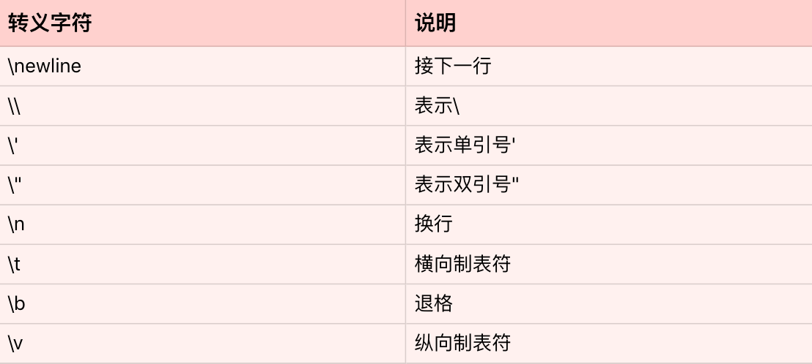

- 00 开篇词 从工程的角度深入理解Python.md
- 01 如何逐步突破，成为Python高手？.md
- 02 Jupyter Notebook为什么是现代Python的必学技术？.md
- 03 列表和元组，到底用哪一个？.md
- 04 字典、集合，你真的了解吗？.md
- 05 深入浅出字符串.md
- 06 Python “黑箱”：输入与输出.md
- 07 修炼基本功：条件与循环.md
- 08 异常处理：如何提高程序的稳定性？.md
- 09 不可或缺的自定义函数.md
- 10 简约不简单的匿名函数.md
- 11 面向对象（上）：从生活中的类比说起.md
- 12 面向对象（下）：如何实现一个搜索引擎？.md
- 13 搭建积木：Python 模块化.md
- 14 答疑（一）：列表和元组的内部实现是怎样的？.md
- 15 Python对象的比较、拷贝.md
- 16 值传递，引用传递or其他，Python里参数是如何传递的？.md
- 17 强大的装饰器.md
- 18 metaclass，是潘多拉魔盒还是阿拉丁神灯？.md
- 19 深入理解迭代器和生成器.md
- 20 揭秘 Python 协程.md
- 21 Python并发编程之Futures.md
- 22 并发编程之Asyncio.md
- 23 你真的懂Python GIL（全局解释器锁）吗？.md
- 24 带你解析 Python 垃圾回收机制.md
- 25 答疑（二）：GIL与多线程是什么关系呢？.md
- 26 活都来不及干了，还有空注意代码风格？！.md
- 27 学会合理分解代码，提高代码可读性.md
- 28 如何合理利用assert？.md
- 29 巧用上下文管理器和With语句精简代码.md
- 30 真的有必要写单元测试吗？.md
- 31 pdb & cProfile：调试和性能分析的法宝.md
- 32 答疑（三）：如何选择合适的异常处理方式？.md
- 33 带你初探量化世界.md
- 34 RESTful & Socket：搭建交易执行层核心.md
- 35 RESTful & Socket：行情数据对接和抓取.md
- 36 Pandas & Numpy：策略与回测系统.md
- 37 Kafka & ZMQ：自动化交易流水线.md
- 38 MySQL：日志和数据存储系统.md
- 39 Django：搭建监控平台.md
- 40 总结：Python中的数据结构与算法全景.md
- 41 硅谷一线互联网公司的工作体验.md
- 42 细数技术研发的注意事项.md
- 43 Q&A：聊一聊职业发展和选择.md
- 加餐 带你上手SWIG：一份清晰好用的SWIG编程实践指南.md
- 结束语 技术之外的几点成长建议.md
05 深入浅出字符串
你好，我是景霄。
Python的程序中充满了字符串（string），在平常阅读代码时也屡见不鲜。字符串同样是Python中很常见的一种数据类型，比如日志的打印、程序中函数的注释、数据库的访问、变量的基本操作等等，都用到了字符串。
当然，我相信你本身对字符串已经有所了解。今天这节课，我主要带你回顾一下字符串的常用操作，并对其中的一些小tricks详细地加以解释。
字符串基础
什么是字符串呢？字符串是由独立字符组成的一个序列，通常包含在单引号（''）双引号（""）或者三引号之中（''' '''或""" """，两者一样），比如下面几种写法。
name = 'jason'
city = 'beijing'
text = "welcome to jike shijian"
这里定义了name、city和text三个变量，都是字符串类型。我们知道，Python中单引号、双引号和三引号的字符串是一模一样的，没有区别，比如下面这个例子中的s1、s2、s3完全一样。
s1 = 'hello'
s2 = "hello"
s3 = """hello"""
s1 == s2 == s3
True
Python同时支持这三种表达方式，很重要的一个原因就是，这样方便你在字符串中，内嵌带引号的字符串。比如：
"I'm a student"
Python的三引号字符串，则主要应用于多行字符串的情境，比如函数的注释等等。
def calculate_similarity(item1, item2):
"""
Calculate similarity between two items
Args:
item1: 1st item
item2: 2nd item
Returns:
similarity score between item1 and item2
"""
同时，Python也支持转义字符。所谓的转义字符，就是用反斜杠开头的字符串，来表示一些特定意义的字符。我把常见的的转义字符，总结成了下面这张表格。

为了方便你理解，我举一个例子来说明。
s = 'a\nb\tc'
print(s)
a
b c
这段代码中的'\n'，表示一个字符——换行符；'\t'也表示一个字符——横向制表符。所以，最后打印出来的输出，就是字符a，换行，字符b，然后制表符，最后打印字符c。不过要注意，虽然最后打印的输出横跨了两行，但是整个字符串s仍然只有5个元素。
len(s)
5
在转义字符的应用中，最常见的就是换行符'\n'的使用。比如文件读取，如果我们一行行地读取，那么每一行字符串的末尾，都会包含换行符'\n'。而最后做数据处理时，我们往往会丢掉每一行的换行符。
字符串的常用操作
讲完了字符串的基本原理，下面我们一起来看看字符串的常用操作。你可以把字符串想象成一个由单个字符组成的数组，所以，Python的字符串同样支持索引，切片和遍历等等操作。
name = 'jason'
name[0]
'j'
name[1:3]
'as'
和其他数据结构，如列表、元组一样，字符串的索引同样从0开始，index=0表示第一个元素（字符），[index:index+2]则表示第index个元素到index+1个元素组成的子字符串。
遍历字符串同样很简单，相当于遍历字符串中的每个字符。
for char in name:
print(char)
j
a
s
o
n
特别要注意，Python的字符串是不可变的（immutable）。因此，用下面的操作，来改变一个字符串内部的字符是错误的，不允许的。
s = 'hello'
s[0] = 'H'
Traceback (most recent call last):
File "<stdin>", line 1, in <module>
TypeError: 'str' object does not support item assignment
Python中字符串的改变，通常只能通过创建新的字符串来完成。比如上述例子中，想把'hello'的第一个字符'h'，改为大写的'H'，我们可以采用下面的做法：
s = 'H' + s[1:]
s = s.replace('h', 'H')
第一种方法，是直接用大写的
'H'，通过加号'+'操作符，与原字符串切片操作的子字符串拼接而成新的字符串。第二种方法，是直接扫描原字符串，把小写的
'h'替换成大写的'H'，得到新的字符串。
你可能了解到，在其他语言中，如Java，有可变的字符串类型，比如StringBuilder，每次添加、改变或删除字符（串），无需创建新的字符串，时间复杂度仅为O(1)。这样就大大提高了程序的运行效率。
但可惜的是，Python中并没有相关的数据类型，我们还是得老老实实创建新的字符串。因此，每次想要改变字符串，往往需要O(n)的时间复杂度，其中，n为新字符串的长度。
你可能注意到了，上述例子的说明中，我用的是“往往”、“通常”这样的字眼，并没有说“一定”。这是为什么呢？显然，随着版本的更新，Python也越来越聪明，性能优化得越来越好了。
这里，我着重讲解一下，使用加法操作符'+='的字符串拼接方法。因为它是一个例外，打破了字符串不可变的特性。
操作方法如下所示：
str1 += str2 # 表示str1 = str1 + str2
我们来看下面这个例子：
s = ''
for n in range(0, 100000):
s += str(n)
你觉得这个例子的时间复杂度是多少呢？
每次循环，似乎都得创建一个新的字符串；而每次创建一个新的字符串，都需要O(n)的时间复杂度。因此，总的时间复杂度就为O(1) + O(2) + … + O(n) = O(n^2)。这样到底对不对呢？
乍一看，这样分析确实很有道理，但是必须说明，这个结论只适用于老版本的Python了。自从Python2.5开始，每次处理字符串的拼接操作时（str1 += str2），Python首先会检测str1还有没有其他的引用。如果没有的话，就会尝试原地扩充字符串buffer的大小，而不是重新分配一块内存来创建新的字符串并拷贝。这样的话，上述例子中的时间复杂度就仅为O(n)了。
因此，以后你在写程序遇到字符串拼接时，如果使用’+=‘更方便，就放心地去用吧，不用过分担心效率问题了。
另外，对于字符串拼接问题，除了使用加法操作符，我们还可以使用字符串内置的join函数。string.join(iterable)，表示把每个元素都按照指定的格式连接起来。
l = []
for n in range(0, 100000):
l.append(str(n))
l = ' '.join(l)
由于列表的append操作是O(1)复杂度，字符串同理。因此，这个含有for循环例子的时间复杂度为n*O(1)=O(n)。
接下来，我们看一下字符串的分割函数split()。string.split(separator)，表示把字符串按照separator分割成子字符串，并返回一个分割后子字符串组合的列表。它常常应用于对数据的解析处理，比如我们读取了某个文件的路径，想要调用数据库的API，去读取对应的数据，我们通常会写成下面这样：
def query_data(namespace, table):
"""
given namespace and table, query database to get corresponding
data
"""
path = 'hive://ads/training_table'
namespace = path.split('//')[1].split('/')[0] # 返回'ads'
table = path.split('//')[1].split('/')[1] # 返回 'training_table'
data = query_data(namespace, table)
此外，常见的函数还有：
string.strip(str)，表示去掉首尾的str字符串；
string.lstrip(str)，表示只去掉开头的str字符串；
string.rstrip(str)，表示只去掉尾部的str字符串。
这些在数据的解析处理中同样很常见。比如很多时候，从文件读进来的字符串中，开头和结尾都含有空字符，我们需要去掉它们，就可以用strip()函数：
s = ' my name is jason '
s.strip()
'my name is jason'
当然，Python中字符串还有很多常用操作，比如，string.find(sub, start, end)，表示从start到end查找字符串中子字符串sub的位置等等。这里，我只强调了最常用并且容易出错的几个函数，其他内容你可以自行查找相应的文档、范例加以了解，我就不一一赘述了。
字符串的格式化
最后，我们一起来看看字符串的格式化。什么是字符串的格式化呢？
通常，我们使用一个字符串作为模板，模板中会有格式符。这些格式符为后续真实值预留位置，以呈现出真实值应该呈现的格式。字符串的格式化，通常会用在程序的输出、logging等场景。
举一个常见的例子。比如我们有一个任务，给定一个用户的userid，要去数据库中查询该用户的一些信息，并返回。而如果数据库中没有此人的信息，我们通常会记录下来，这样有利于往后的日志分析，或者是线上bug的调试等等。
我们通常会用下面的方法来表示：
print('no data available for person with id: {}, name: {}'.format(id, name))
其中的string.format()，就是所谓的格式化函数；而大括号{}就是所谓的格式符，用来为后面的真实值——变量name预留位置。如果id = '123'、name='jason'，那么输出便是：
'no data available for person with id: 123, name: jason'
这样看来，是不是非常简单呢？
不过要注意，string.format()是最新的字符串格式函数与规范。自然，我们还有其他的表示方法，比如在Python之前版本中，字符串格式化通常用%来表示，那么上述的例子，就可以写成下面这样：
print('no data available for person with id: %s, name: %s' % (id, name))
其中%s表示字符串型，%d表示整型等等，这些属于常识，你应该都了解。
当然，现在你写程序时，我还是推荐使用format函数，毕竟这是最新规范，也是官方文档推荐的规范。
也许有人会问，为什么非要使用格式化函数，上述例子用字符串的拼接不也能完成吗？没错，在很多情况下，字符串拼接确实能满足格式化函数的需求。但是使用格式化函数，更加清晰、易读，并且更加规范，不易出错。
总结
这节课，我们主要学习了Python字符串的一些基本知识和常用操作，并且结合具体的例子与场景加以说明，特别需要注意下面几点。
Python中字符串使用单引号、双引号或三引号表示，三者意义相同，并没有什么区别。其中，三引号的字符串通常用在多行字符串的场景。
Python中字符串是不可变的（前面所讲的新版本Python中拼接操作’+=‘是个例外）。因此，随意改变字符串中字符的值，是不被允许的。
Python新版本（2.5+）中，字符串的拼接变得比以前高效了许多，你可以放心使用。
Python中字符串的格式化（string.format）常常用在输出、日志的记录等场景。
思考题
最后，给你留一道思考题。在新版本的Python（2.5+）中，下面的两个字符串拼接操作，你觉得哪个更优呢？欢迎留言和我分享你的观点，也欢迎你把这篇文章分享给你的同事、朋友。
s = ''
for n in range(0, 100000):
s += str(n)
l = []
for n in range(0, 100000):
l.append(str(n))
s = ' '.join(l)
© 2019 - 2023 Liangliang Lee. Powered by gin and hexo-theme-book.